Scene: joshua
Photos taken by me at Joshua Tree National Park.
Images: joshua1.jpg + joshua2.jpg · NMS window: img1=151px, img2=151px · NNDR threshold=0.85 · Matches=47
Params: Harris(block=2, ksize=3, k=0.04) · Descriptor(patch=40->desc=8, blur_sigma=1.0) · Step1(3x3, thr_rel=0.02) · NMS(thr_rel=0.0005, divisor=20.0) · Matching(metric=SSD, mutual=True, l2_norm=True)
Original pair
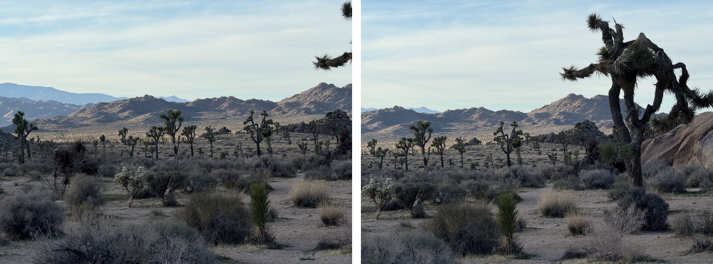
Step 1: Harris corners
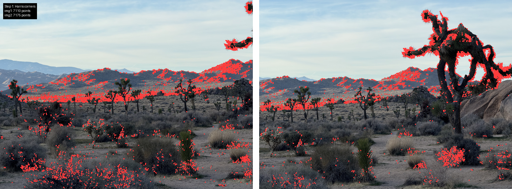
Step 2: NMS corners
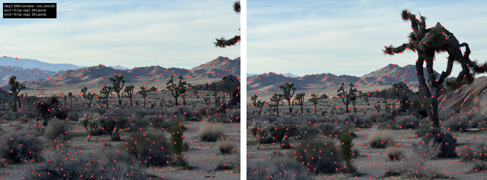
Step 4.2: NNDR histogram
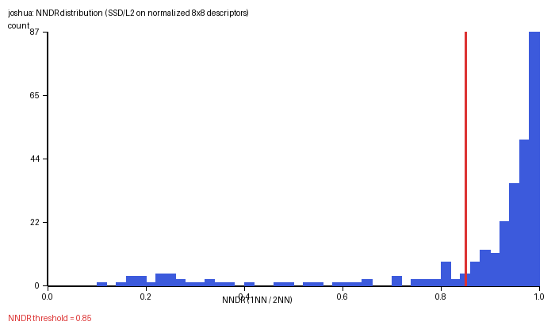
Step 4.1: Top-5 matches (img1 / img2 1NN / img2 2NN)
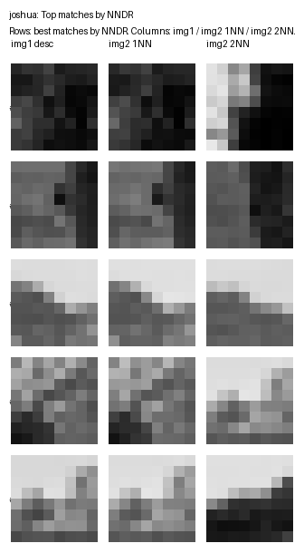
Step 4.3: Match visualization (green lines = matches, red dots = unmatched)
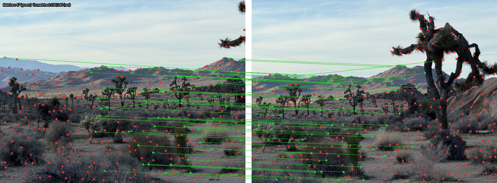
Extra credit: panorama (scroll horizontally if needed)
Extra credit: RANSAC inlier matches
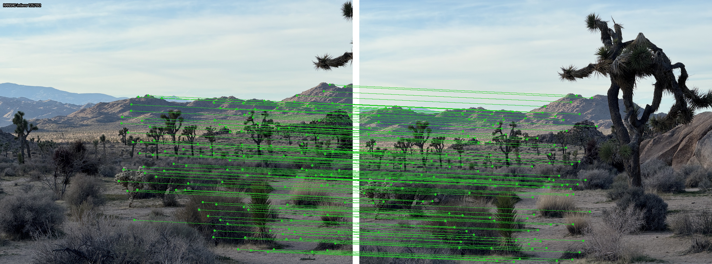
Scene: lake
Photos taken by me at Lake Powell at Page.
Images: lake1.jpg + lake2.jpg · NMS window: img1=151px, img2=151px · NNDR threshold=0.85 · Matches=18
Params: Harris(block=2, ksize=3, k=0.04) · Descriptor(patch=40->desc=8, blur_sigma=1.0) · Step1(3x3, thr_rel=0.02) · NMS(thr_rel=0.0005, divisor=20.0) · Matching(metric=SSD, mutual=True, l2_norm=True)
Original pair
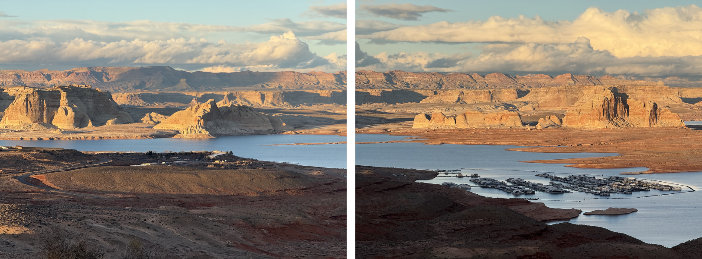
Step 1: Harris corners
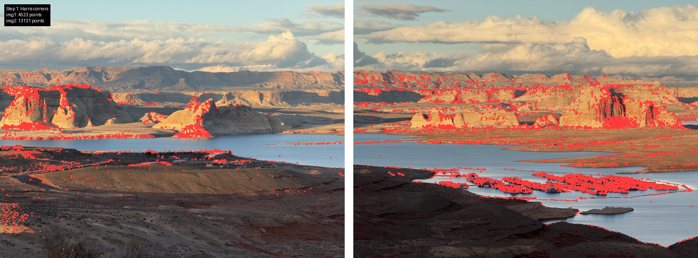
Step 2: NMS corners
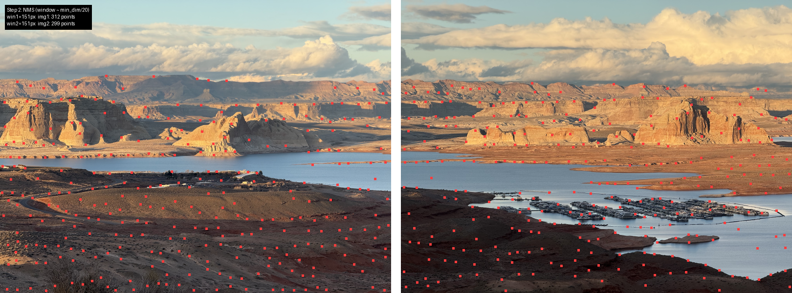
Step 4.2: NNDR histogram
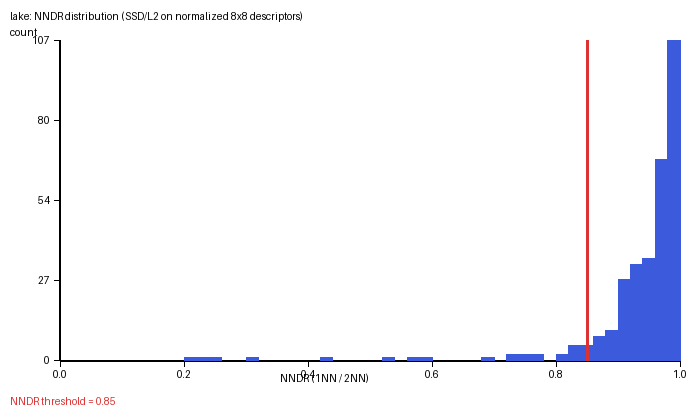
Step 4.1: Top-5 matches (img1 / img2 1NN / img2 2NN)
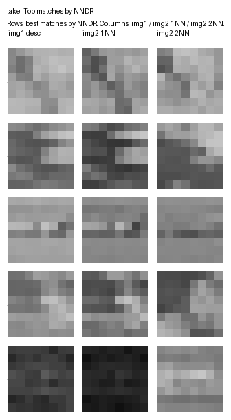
Step 4.3: Match visualization (green lines = matches, red dots = unmatched)
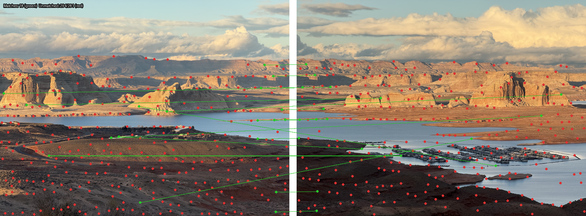
Extra credit: panorama (scroll horizontally if needed)
Extra credit: RANSAC inlier matches
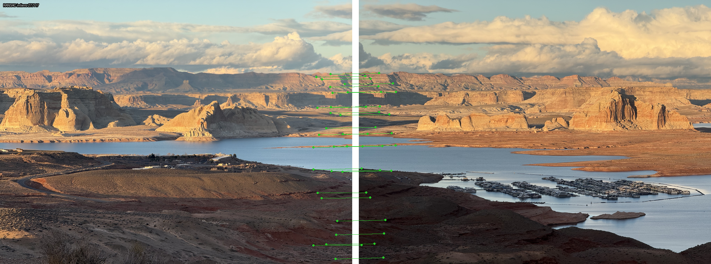